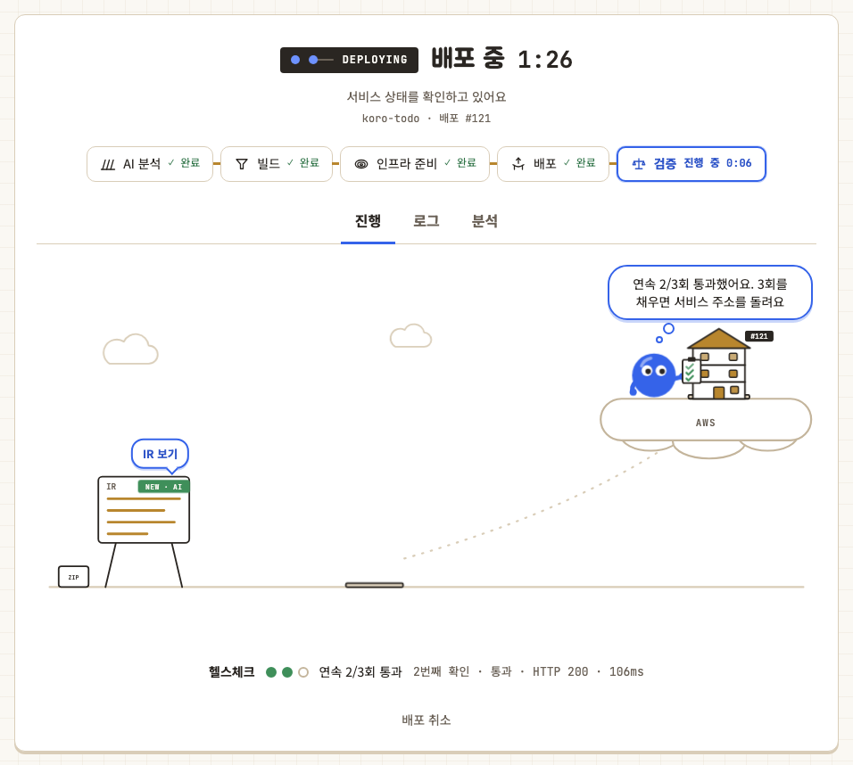

05 · 검증과 멱등성
연속 응답과 요청 식별값으로 중복 배포를 막았습니다

한 번의 성공보다 연속 응답
컨테이너 시작 직후의 일시적인 응답을 정상 배포로 오인하지 않도록 최대 8회 확인하고 3회 연속 성공을 요구했습니다. 시간 초과와 연결 오류는 서로 다른 실패 원인으로 구분했습니다.
판단 근거를 남기는 검증 기록
각 시도마다 대상 URL, 응답 시간, 상태 코드와 실패 사유를 PostgreSQL에 저장했습니다. Dashboard에서 어느 단계와 주소에서 검증이 멈췄는지 확인할 수 있습니다.
같은 요청은 한 번만 실행
Job ID와 요청 내용의 SHA-256 fingerprint를 함께 비교했습니다. 동일한 재시도에는 기존 결과를 반환하고, 같은 ID에 다른 내용이 들어오면 충돌로 처리해 중복 배포를 막았습니다.
후보 환경이 실패하면 기존 서비스 유지
후보 주소를 먼저 검증한 뒤 origin을 변경하고 공개 URL을 다시 확인합니다. 마지막 검증이 실패하면 이전 origin으로 되돌려 사용 중인 서비스를 보호했습니다.
01Candidate Deploy
02Target Verify
03Origin Switch
04Public Verify
05Commit or Rollback